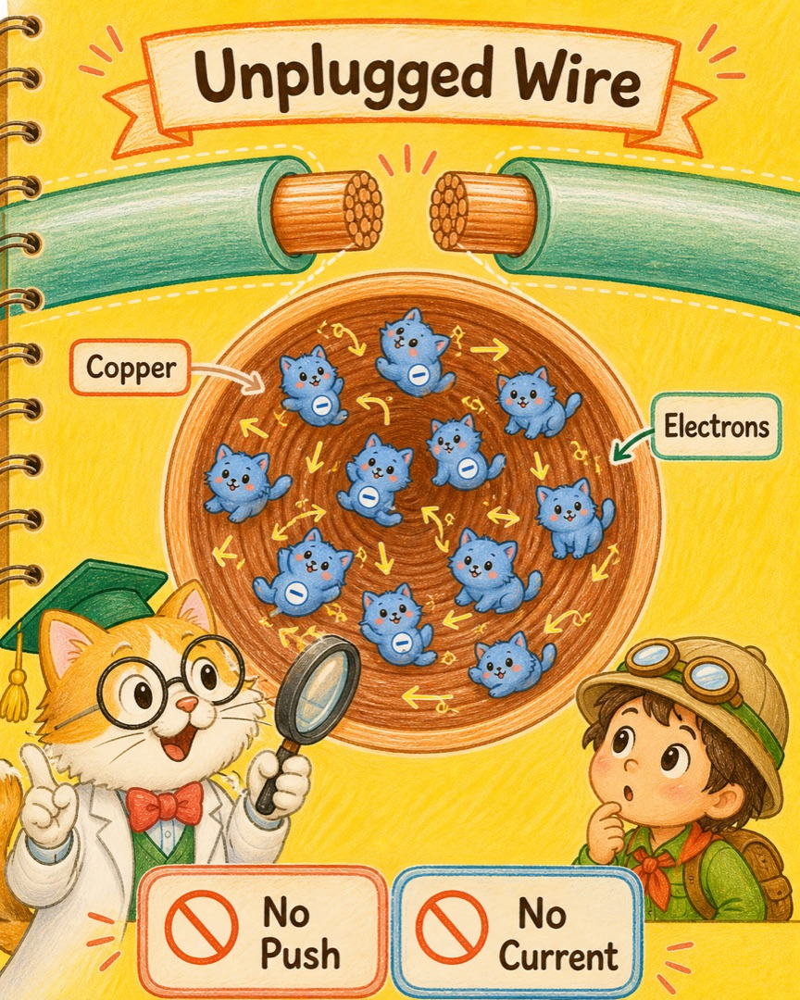
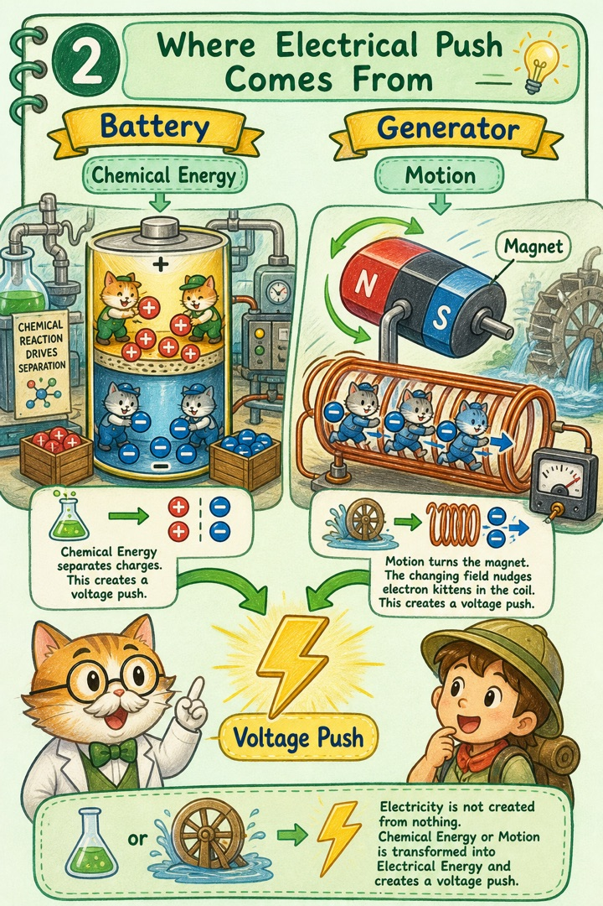
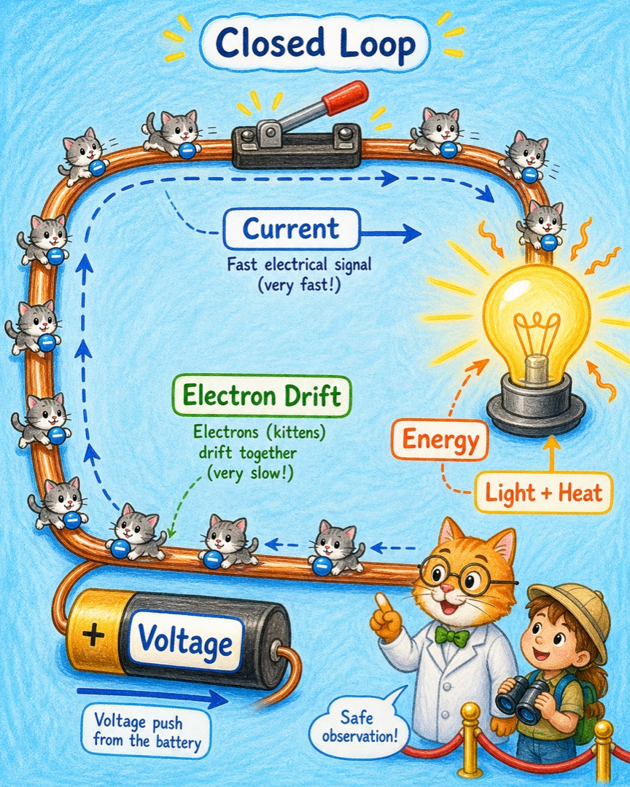
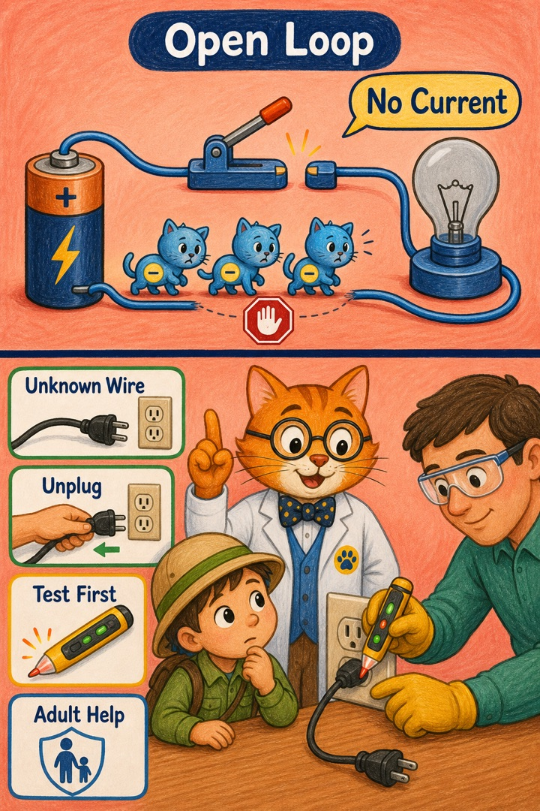
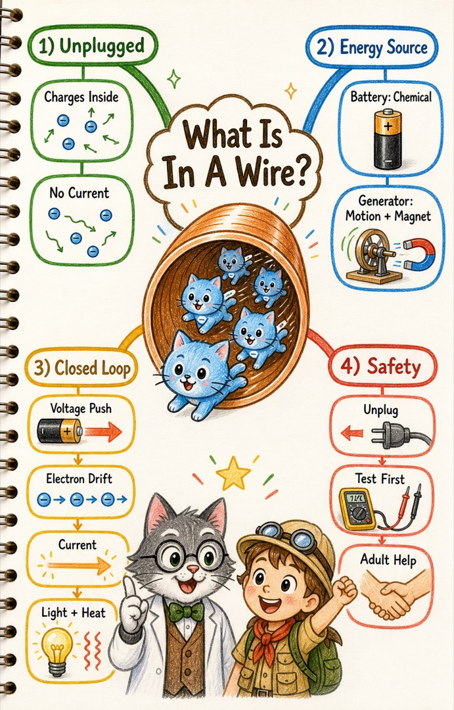

小猫解释万物：电线里面有没有电？
在我们的世界里，那其实是……一条住着许多电子小猫的铜质隧道。
喵呜，兔兔提出了一个非常厉害的问题。你们剪下的电线明明没有连着电源，里面却本来就有带电荷的电子。
因为人们说“电”时，常常把三件不同的事混在一起：
所以最准确的回答是：那段断开的电线里有电荷，但没有电源施加的危险电压，也没有持续电流。平时说“它没电”，指的就是后两件事。
故事板构建
- 剪下的电线：电子小猫还在，但没有统一的推动。
- 电从哪来：电池用化学能，发电机用运动和磁场，造出电压推动。
- 回路接通：小猫们在完整圈路上一起漂移，电能变成灯的光和热。
- 回路断开：圈路有缺口，持续电流就停下；陌生电线仍要先断电、再检测。
画面一：电子小猫本来就在线里

把电线放大，会看到里面的铜由原子组成，其中有些电子可以在金属里移动。没有电源时，它们仍在做零零碎碎的运动，却没有大家一起前进的方向。
有电子，不等于有电流。就像走廊里有很多小猫，不等于它们正在排队向前走。
画面二：电不是凭空蹦出来的

电池工坊里，化学反应小猫把正负电荷分开，两端便出现了电压。它就像起点与终点之间的高度差，能推动电子小猫。
发电机里，水、风、蒸汽或其他动力带着磁铁与线圈相对运动，变化的磁场便会在导线中造出电压。我们不是创造电荷，而是把化学能、运动能等转换成电能。
画面三：完整的圈路让灯亮起来

当电池、电线和灯连成一个完整圈路，电场的号令会很快传遍回路。线里的电子小猫同时开始缓慢漂移，形成电流。
某一只电子小猫不需要从电厂狂奔到你家。它们更像挤满了管道的队伍：一端一推，整条队伍就几乎同时开始挪动。电能送到灯中，变成了光和热。
画面四：路一断，持续电流就停

开关打开，圈路出现缺口，电子小猫无法绕着完整路线持续移动，灯便不亮了。只把一根线接到电池的一端，也不会让普通灯泡持续发光，因为回路还没封闭。
但外表不能告诉我们一根陌生电线是否真的断电。所以喵博士的安全规则是：不猜、不碰、不剪；先由大人断开电源，需要操作时再用合适工具确认没有电压。
还有一个小边界：断开的电线表面偶尔也可能因摩擦带上一点静电，就像秋冬脱毛衣时的“啪”一声。它与电源连接后能持续送来的电流，是不同的情况。
可预测的下一步：用儿童低压电路套件，把电池、开关和小灯连成圈。兔兔可以先猜：开关闭合时，哪些小猫开始行动？只要在任意一处打开缺口，灯又会怎样？
总结思维图

从今天起，兔兔看到的就不再只是一根电线了：里面有电荷，电源提供电压，完整回路才能让电流持续流动，而电能会在灯里变成我们看得见的光。